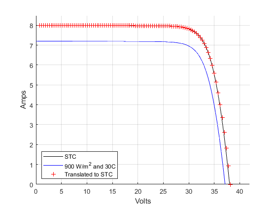

pvl_translate_IV_curve_IEC60891_2
PVL_TRANSLATE_IV_CURVE_IEC60891_2 translates IV curves to a target irradiance G and temperature Tc using method 2 in IEC60891.
Contents
Syntax
Result = pvl_translate_IV_curve_IEC60891_2(IVCurves, G, Tc, aIsc, bVoc, Rs, kappa, a)
Description:
Method 2 in IEC60891 translates a point on an IV curve measured at irradiance G1 and cell temperature Tc1 to the corresponding point on an unobserved IV curve at irradiance G2 and cell temperature Tc2. The translation reduces the voltage value by a voltage drop across the ‘internal series resistance’ of the module ([IEC 60891], Eq. 2). The translation requires a value for the resistance Rs, a curve correction factor kappa related to the temperature dependence of the resistance, and a curve correction factor a related to the dependence of Voc on the logarithm of irradiance. A value for Rs is found by the optimization in pvl_est_Rs_IEC60891_2.
Inputs:
- IVCurves - A structure with the following fields:
- * IVCurves.Isc - Column vector of short circuit current in amperes.
- * IVCurves.Voc - Column vector of open circuit voltage in volts.
- * IVCurves.Imp - Column vector of current at maximum power point in amperes.
- * IVCurves.Vmp - Column vector of voltage at maximum power point in volts.
- * IVCurves.Pmp - Column vector of power at maximum power point in watts.
- * IVCurves.V - Array of voltages in volts. Row n corresponds to IV curve n, with V=0 in the leftmost column and V=Voc in the rightmost column.
- * IVCurves.I - Array of currents in amperes. Row n corresponds to IV curve n, with I=Isc in the leftmost column and I=0 in the rightmost column.
- * IVCurves.Tc - column vector of cell temperature (C)
- G - the target irradiance (W/m2)
- Tc - the target cell temperature (C)
- aIsc - relative temperature coefficient for short circuit current in 1/C (not A/C).
- bVoc - relative temperature coefficient for open circuit voltage in 1/C (not V/C).
- Rs - internal series resistance parameter for the translation, in ohms.
- kappa - curve correction factor interpreted as the temperature coefficient of the internal series resistance, in ohms/C.
- a - curve correction factor related to the dependence of Voc on the logarithm of irradiance, unitless.
Output:
- Result - a structure with the same fields as IVCurves, containing the translated IV curves
Example
clearvars % Set up parameters for a representative 60 cell cSi module using the Desoto model Const.q = 1.60218E-19; Const.k = 1.38066E-23; Const.E0 = 1000; Const.T0 = 25; param.aIsc = 0.0008; % A/C param.bVoc = -0.1900; % V/C param.Rs_ref = 0.2; param.Rsh_ref = 1000; param.IL_ref = 8.0; param.I0_ref = 5e-10; param.a_ref = 1.05 * 60 * Const.k/Const.q * (273.15 + Const.T0); EgRef = 1.121; dEgdT = -0.0002677; % Calculate set of IV curves at constant temperature to estimate Rs Ee = 900:20:1100; Tc = 25; nPts = 100; for i=1:length(Ee) [IL, I0, Rs, Rsh, nNsVth] = pvl_calcparams_desoto(Ee(i), Tc, param.aIsc, param, EgRef, dEgdT); IVcurves(i) = pvl_singlediode(IL, I0, Rs, Rsh, nNsVth, nPts); end % Add Ee and Tc to IVcurves for i=1:length(Ee) IVcurves(i).Ee = Ee(i); IVcurves(i).Tc = Tc; end % Calculate relative temperature coefficients STC_Isc = IVcurves(6).Isc; STC_Voc = IVcurves(6).Voc; aIsc_rel = param.aIsc / STC_Isc; bVoc_rel = param.bVoc / STC_Voc; % Estimate Rs and a [Rs_est, a] = pvl_est_Rs_IEC60891_2(IVcurves, aIsc_rel, bVoc_rel); clearvars IVcurves % Calculate set of IV curves at constant irradiance to estimate kappa Ee = 1000; Tc = 20:1:30; nPts = 100; for i=1:length(Tc) [IL, I0, Rs, Rsh, nNsVth] = pvl_calcparams_desoto(Ee, Tc(i), param.aIsc, param, EgRef, dEgdT); IVcurves(i) = pvl_singlediode(IL, I0, Rs, Rsh, nNsVth, nPts); end % Add Ee and Tc to IVcurves for i=1:length(Tc) IVcurves(i).Ee = Ee; IVcurves(i).Tc = Tc(i); end % Estimate kappa kappa = pvl_est_kappa_IEC60891_2(IVcurves, aIsc_rel, bVoc_rel, Rs_est); % Translate the IV curve from 900 W/m2 and Tc = 30C to STC Ee = 900; Tc = 30; nPts = 100; [IL, I0, Rs, Rsh, nNsVth] = pvl_calcparams_desoto(Ee, Tc, param.aIsc, param, EgRef, dEgdT); IVcurve_m = pvl_singlediode(IL, I0, Rs, Rsh, nNsVth, nPts); IVcurve_m.Ee = Ee; IVcurve_m.Tc = Tc; IVcurve_trans = pvl_translate_IV_curve_IEC60891_2(IVcurve_m, 1000, 25, aIsc_rel, bVoc_rel, Rs_est, kappa, a); % Calculate IV curve at STC Ee = 1000; Tc = 25; nPts = 100; [IL, I0, Rs, Rsh, nNsVth] = pvl_calcparams_desoto(Ee, Tc, param.aIsc, param, EgRef, dEgdT); IVcurve_STC = pvl_singlediode(IL, I0, Rs, Rsh, nNsVth, nPts); figure hold all plot(IVcurve_STC.V, IVcurve_STC.I, 'k-') plot(IVcurve_m.V, IVcurve_m.I, 'b-') plot(IVcurve_trans.V, IVcurve_trans.I, 'r+') grid on xlim([0 42]) ylim([0 8.5]) xlabel('Volts') ylabel('Amps') legend('STC', '900 W/m^2 and 30C', 'Translated to STC', 'location', 'SouthWest')
References:
- [1] IEC60891 Ed. 2 2009. Procedures for temperature and irradiance corrections to measured I-V characteristics of crystalline silicon photovoltaic (PV) devices.
See also
pvl_est_Rs_IEC60891_2, pvl_est_kappa_IEC60891_2, pvl_translate_IV_curve_IEC60891_1
Copyright 2018 Sandia National Laboratories